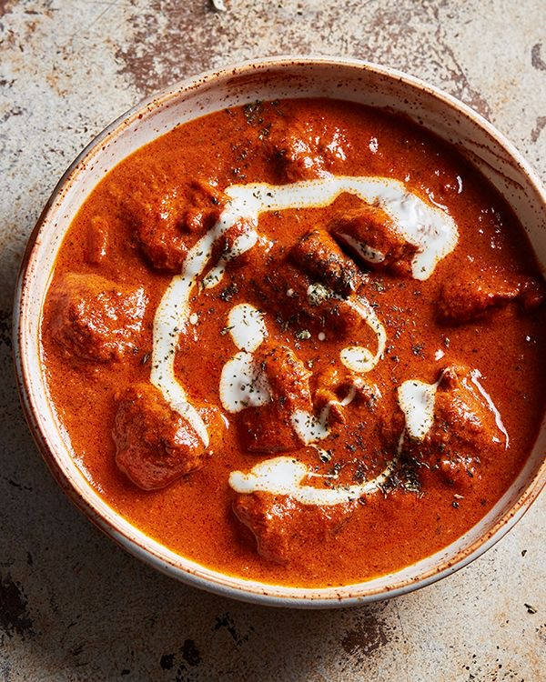

About The Recipe
Butter Chicken is a type of curry made from chicken and butter sauce. This dish gets its name from how much yoghurt and butter are used in the recipe
Ingredients
- Diced boneless chicken breast
- Butter
- Plain yoghurt
- Finely chopped onion
- Grated garlic & ginger
- One grated tomato
- Tomato puree
- Garam masala/Butter chicken masala
- tumeric powder
- Chilli powder/ Paprika
- Salt for taste
- Heavy cream
- Basmati Rice for serving
Cooking Instructions
- Marinate diced chicken cubes with paprika, garam masala and yoghurt.
- Heat butter in a larg pan, add onions and fry until golden brown.
- Add your grated garlic & ginger and stir.
- Add marinated chicken pieces and cook until the chicken is fully cooked through for about 10-15 minutes.
- Add grated tomato and tomato puree and stir.
- Add 1 spoon of garam masala and salt and cook for 5-7 minutes stirring occasionaly.
- Stir in the heavy cream and simmer for an additional 5 minutes.
- Serve hot with rice or Roti